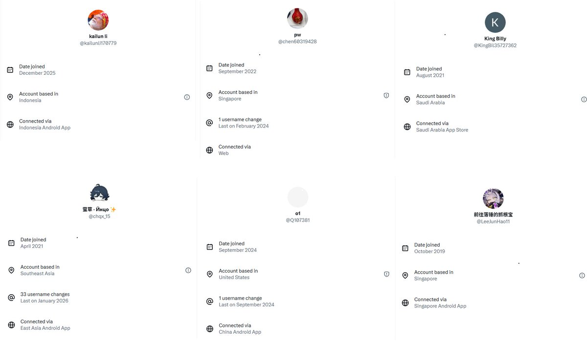

maybe🍥
@careforme123
@Justice53_07_27 看到这么多人喷你我就知道人类还有希望

谣言终结者
@Justice53_07_27
我发现最心心念念清朝时期割让出去的领土的都是挂着各种梯子的岛上精神日杂（我指在原帖下面冷嘲热讽的那些东西），以后解放后一定要记着让这些人去收复外东北之类的地方，满足它们的愿望。
我就不说天气更恶劣的外东北了，据统计现在东北人口都在不断流出，以后振兴东北就靠岛民了。 https://t.co/jLa4PQkfpO https://t.co/mo9h5rNDQv